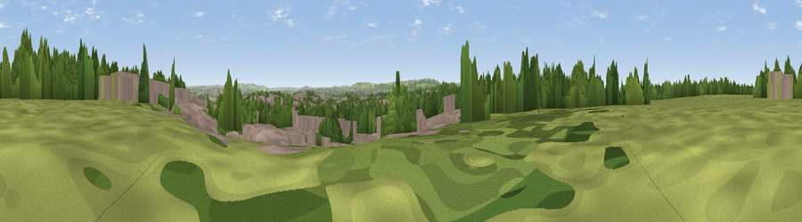

Durdham Down
#28709 in England · top 54% of its area beats it · near Leigh WoodsThe view, rendered

A 360° render of this exact spot computed from the terrain model, tree cover and land cover — summer colours, afternoon light, calibrated against photographs of famous viewpoints. Real trees, hedges and buildings will differ in detail.
The panorama
Grey silhouette: terrain skyline in each direction (720 bearings, Earth curvature and refraction included). Dashed green: skyline with trees (+15 m) and buildings (+8 m) as obstacles. Blue strip: how far the ground is visible on each bearing.
Where the view opens
Wedge length = distance to the farthest visible ground on that bearing (vegetation-aware). Rings at 10, 25 and 50 km.
What fills the view
43% built-up · 34% woodland · 21% grassland · 1% cropland ·
Angular shares of the visible panorama (visual magnitude), not map area. Landscape diversity 0.50 (0–1 Shannon).
Key numbers
More beautiful places nearby
The staircase of upgrades: each row has a higher view potential than everything closer. Driving times are estimates from straight-line distance, calibrated against real road routing — check an actual route before setting out.
| Place | Direction | Drive | Score |
|---|---|---|---|
| Viewpoint near Leigh Woods | SSW · 2 km | ~5 min | 45.2 |
| Viewpoint near Hallen | NNW · 4 km | ~9 min | 62.8 |
| Viewpoint near Hallen | NW · 4 km | ~9 min | 66.7 |
| Dundry Hill | SSW · 8 km | ~16 min | 72.4 |
| Viewpoint near Norton Malreward | SSE · 9 km | ~17 min | 72.9 |
| Hanging Hill | ESE · 15 km | ~27 min | 76.4 |
| Beacon Batch | SSW · 19 km | ~33 min | 79.4 |
| Bleadon Hill [Loxton Hill] | SW · 27 km | ~43 min | 79.6 |
51.46974, -2.61876 · source: dobih hill · position refined by local search. Computed location — check access rights before visiting.